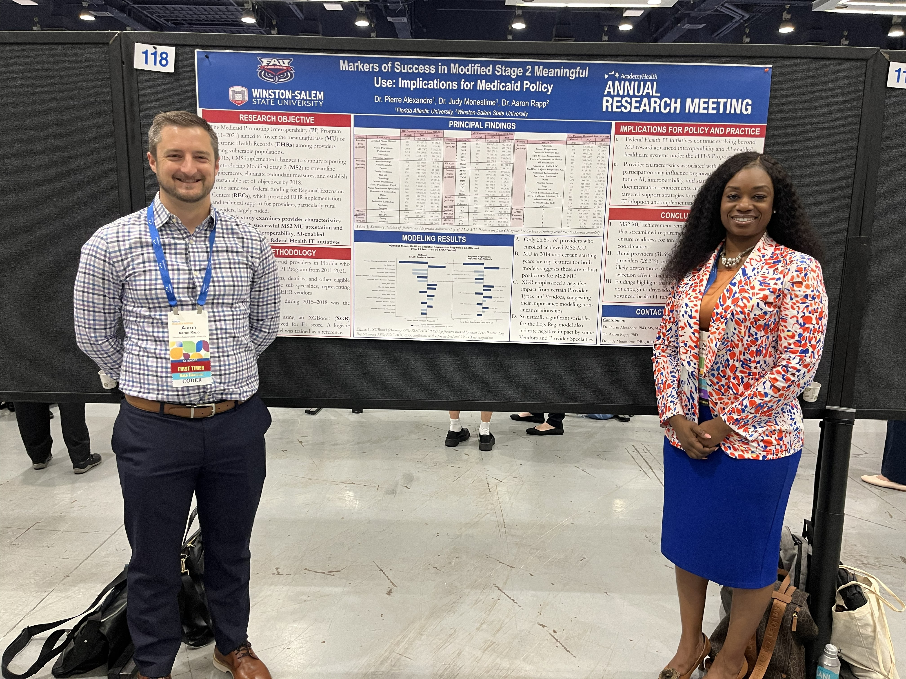
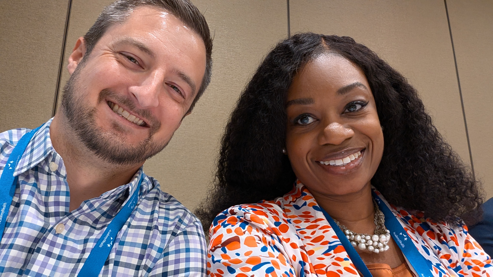
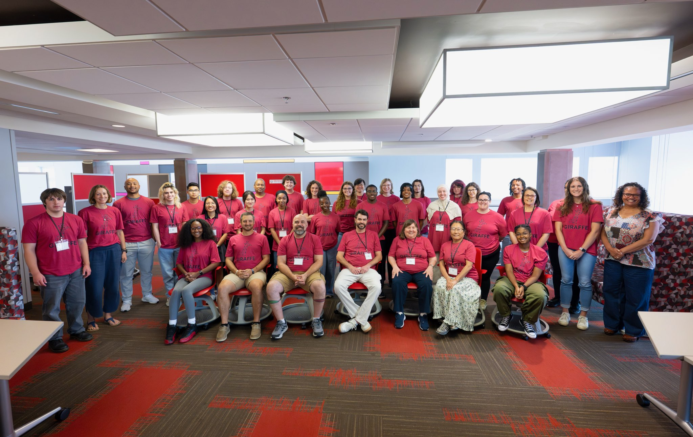
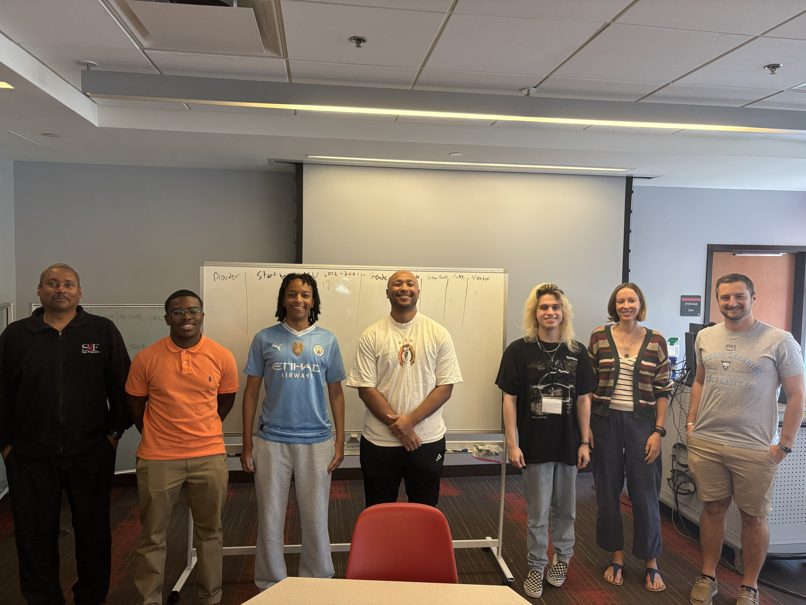
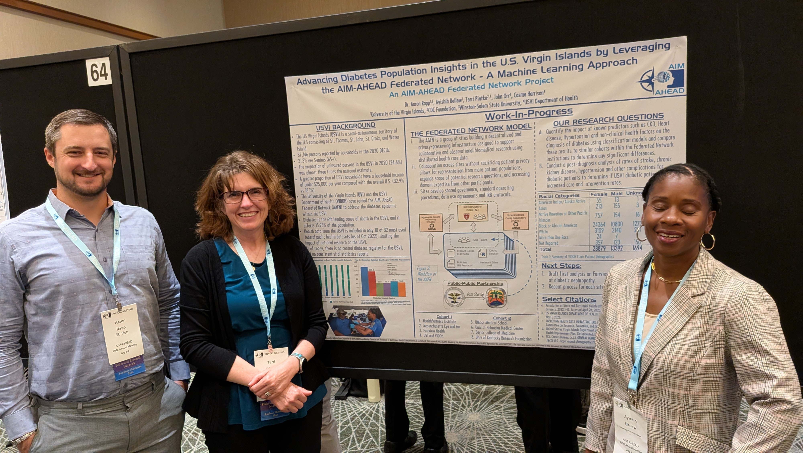
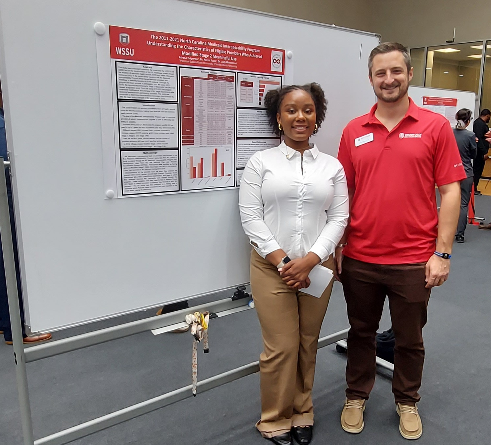
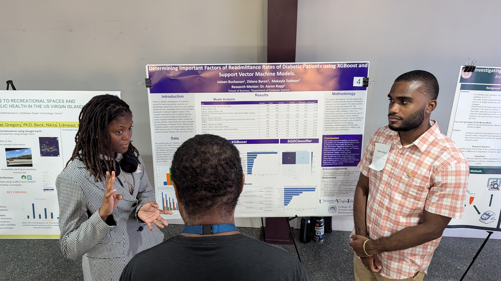
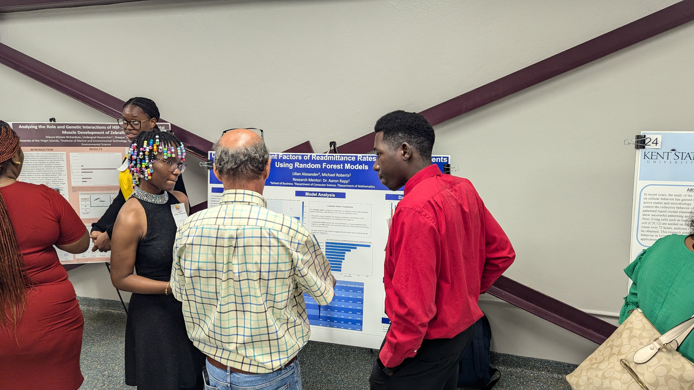
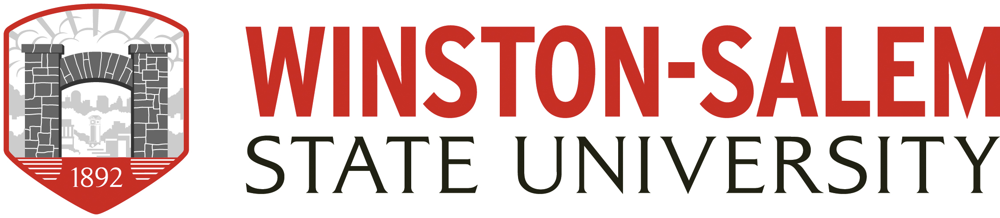

↓ CV
↓ CV
↓ CV
↓ CV
Assistant Professor of Mathematics at Winston-Salem State University, working at the intersection of numerical PDE methods and biomedical data science for health equity.

A selection of photos from invited talks, poster sessions, and conference presentations across mathematics, data science, and health equity research.














I am an Assistant Professor of Mathematics at Winston-Salem State University, where I joined the faculty in 2025. Previously, I served as Assistant Professor of Mathematics and Data Science Program Coordinator at the University of the Virgin Islands (2020–2025). I earned my Ph.D. in Computational Mathematics from the University of North Carolina at Greensboro in 2020.
My primary research focuses on dual-wind discontinuous Galerkin methods for elliptic variational inequalities and Hamilton-Jacobi equations, as well as biomedical and public health data science — particularly electronic health record analysis and AI/ML models for underrepresented populations.
I am co-PI on an NIH AIM-AHEAD award supporting AI/ML health equity research in the U.S. Virgin Islands, and a participant in the NSF EPSCoR RISE RII program. I am deeply committed to open education, social justice in STEM, and mentoring undergraduate researchers from underrepresented communities.

I welcome inquiries from students interested in undergraduate research in mathematics, data science, or biomedical applications — particularly those from underrepresented groups in STEM.
For general correspondence, email is the best way to reach me.